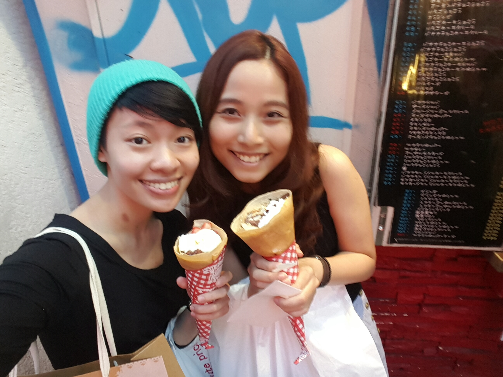
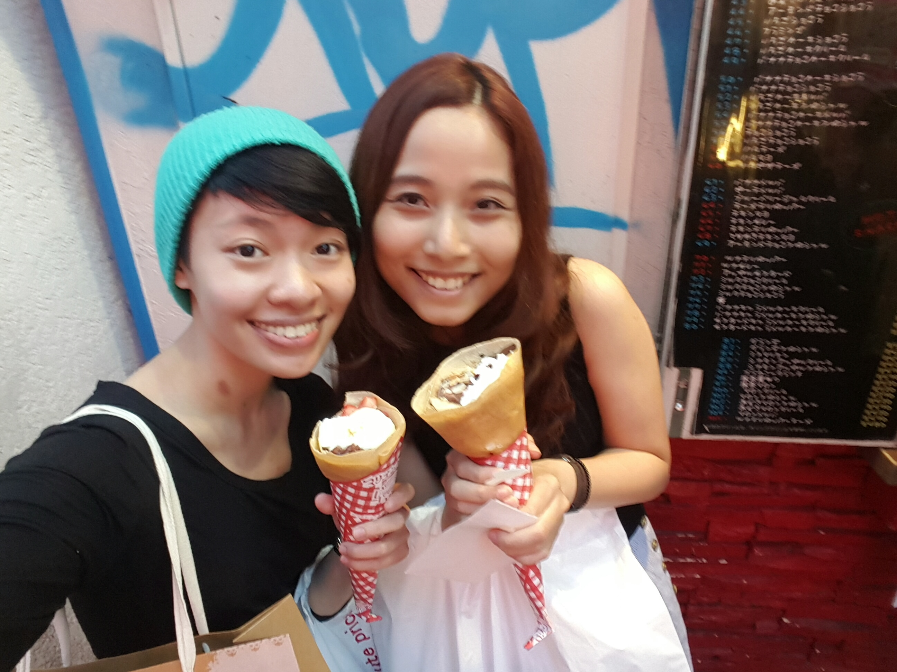
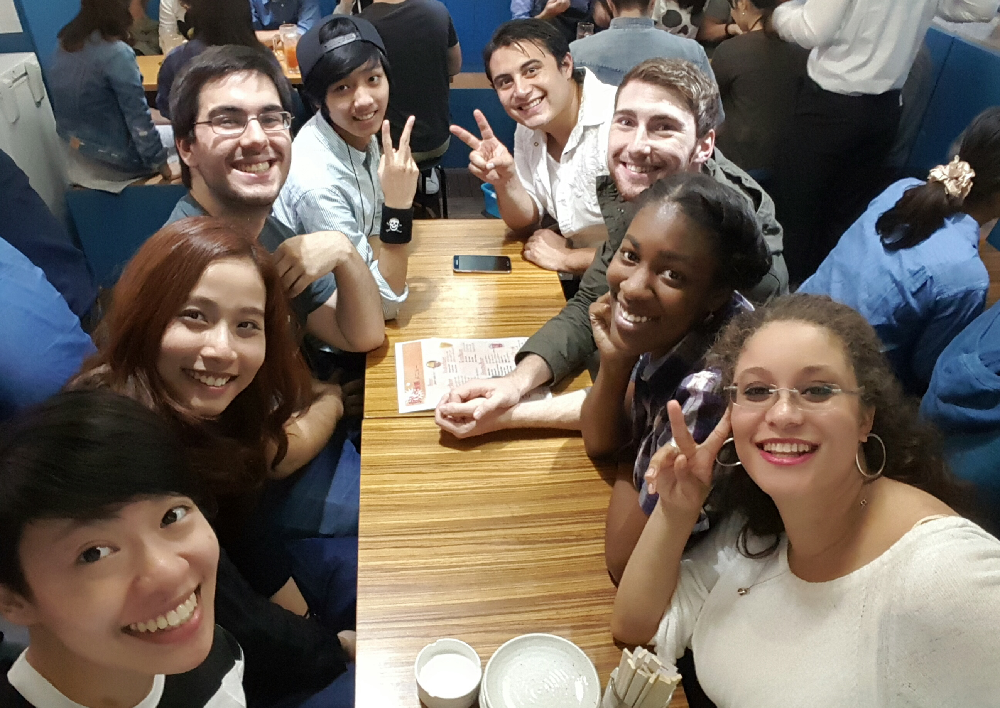
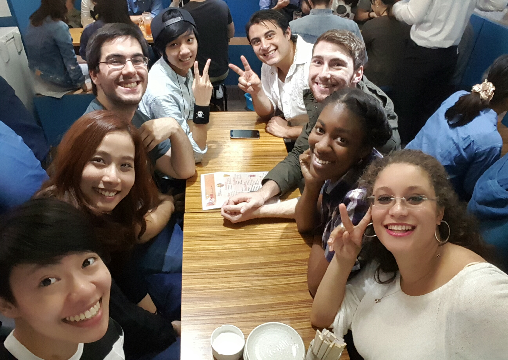
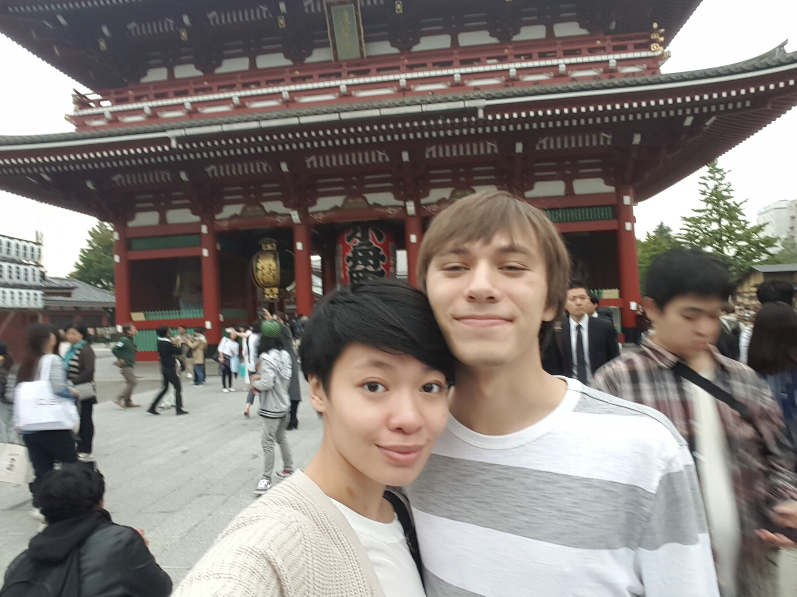
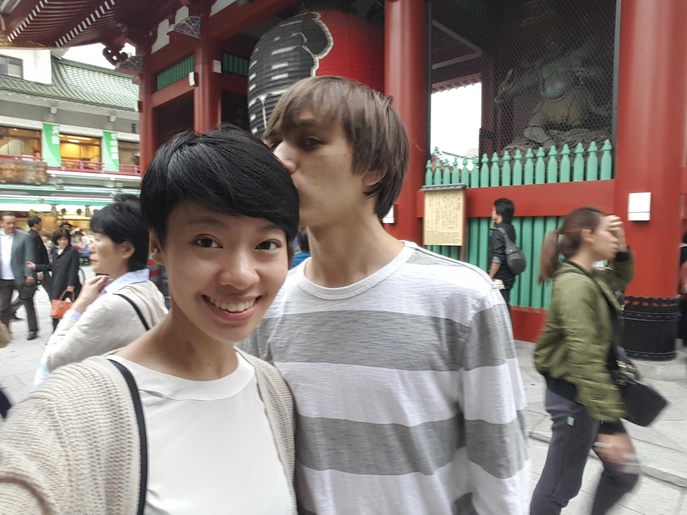
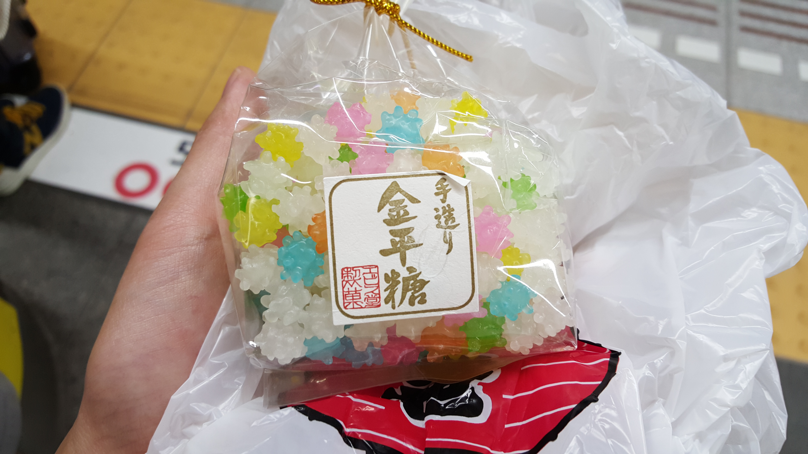
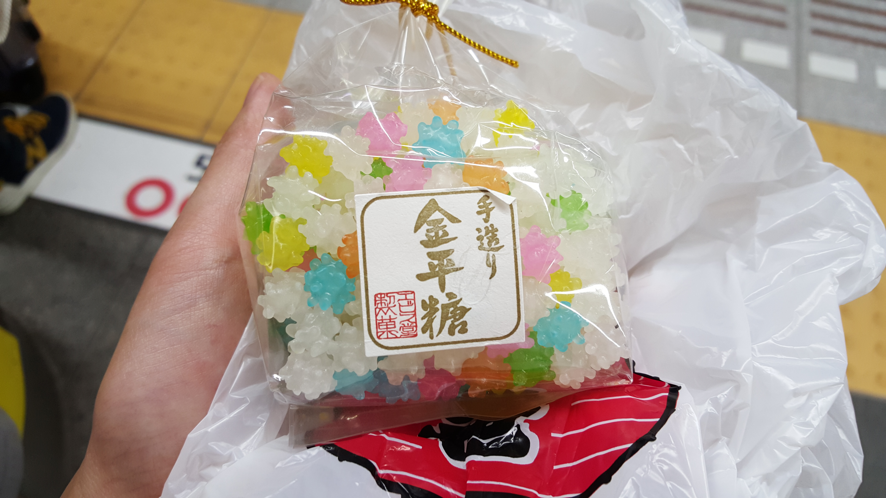
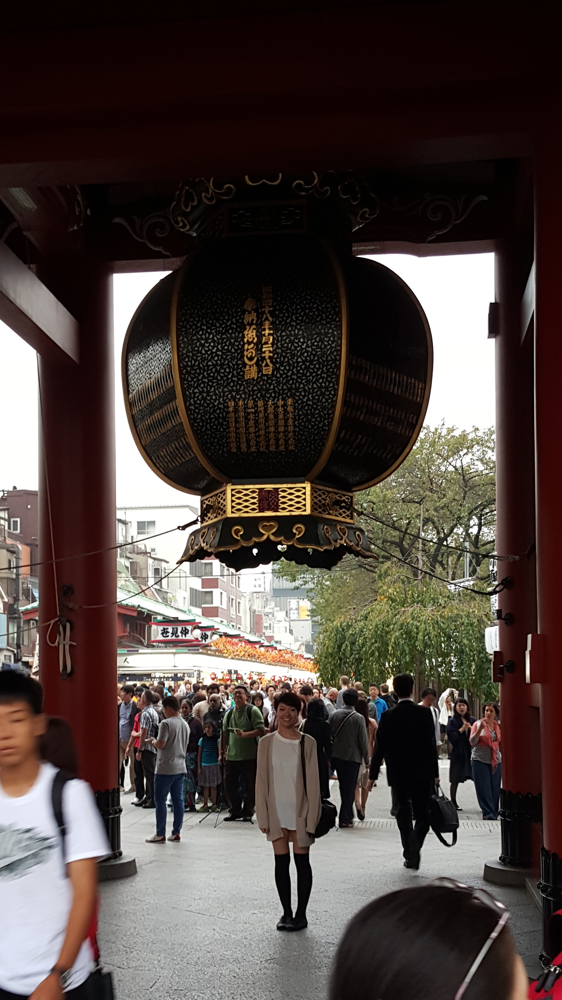
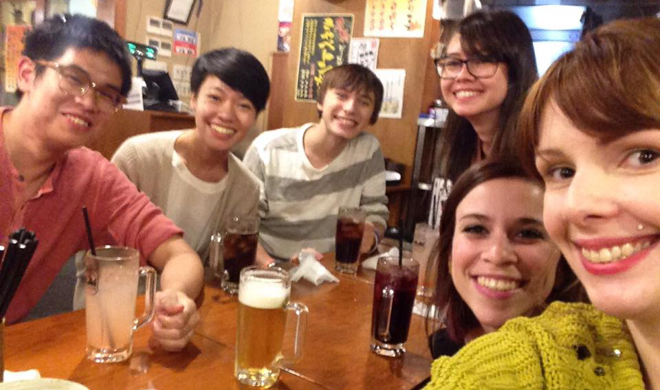

October 5th, 2015
Alex
Mindy
Today marked the first full week of school at Sophia University but I’ve already noticed some huge differences between my home university, Olin and Sophia. As I was told already, Japanese students are a lot more nonchalant when it comes to university. I was also told that Sophia University was one of the older centers for higher learning in Japan, but I was still struck by the strictness and old fashion methods of control here. Attendance matters far more than effort does and it’s apparent by the number of students who show up and never participate until prodded awake.
Alex with Mindy
October 6th, 2015
Alex
Mindy
After my two classes (Japanese Language and Media Representation and Technology) and lunch with friends from my study abroad program, Kha and I headed over to Harajuku. It was much less crowded than when Alex and I went on a Sunday. We started out wandering through clothing stores on the main street with the explicit aim of finding more clothes. It turned out that there were a lot of deals to be had in the hidden stores and in the sales racks of the stores. Kha is a much better shopper than I but we both ended the journey with full bags. There was actually a point at which we decided to save our backs and drop everything into a locker while we wandered. At the end we got crepes and found a tacoyaki place called Koi-Taco that lets you write messages on the walls!
 

Alex with Mindy
October 7th, 2015
Alex
Mindy
Wednesdays are my longest days consisting of Japanese first period and my Venture Management course during third and fourth. Unfortunately, unlike the studio style courses I’ve become used to, the three hours consisted of pure lecture. It didn’t help that the professor is soft spoken and many of the students were blatantly disrespectful of the fact that they are in a class. Regardless, Kha and I made it through and I retreated back to dorms to plop.
October 8th, 2015
Mindy with Alex
Like most of my weekdays, I was free after second period. I met up with Alex just outside of Sophia’s front gate to head out to Butadon! The source of *~delicious~* pork and rice. Unfortunately, Alex wasn't feeling too good so we headed back to his dorms to chill for the rest of the day.
October 9th, 2015
Alex
Mindy
After my two classes, I was eating lunch with some friends in the CIEE break room waiting for Kha so we could go to Shibuya when she came in and told me that she was going to a nomikai and that I was coming with her. Since clubs were recruiting new students, many of them were hosting nomikais as a way of welcoming new members and showing what the club or circle culture was like. After wandering around Shibuya and buying some more socks, we headed back for the nomikai. The group members guided us to Shinjuku where we headed up to the rooftop floor and drank and ate for a few hours. It was Sophia Communications which connected Japanese students and foreign students to practice Japanese. However the number of foreign students greatly outnumbered the Japanese students and we wound up mostly speaking in broken English and playing Japanese and American drinking games.
 

October 10th, 2015
Alex with Mindy
  



